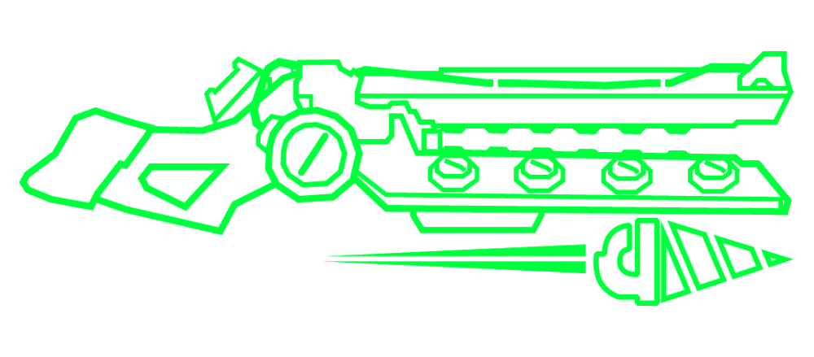

Canhões de Relâmpagos
O Canhão de Relâmpagos Elétrico é a variante azul do Canhão. Dispara uma descarga elétrica perfurante e instantânea, semelhante a um raio. Perfura todos os inimigos. Preste atenção ao seu posicionamento para maximizar a destruição. Não use na água.
O Canhão de Relâmpagos Parafusadeira é a variante verde do Canhão, que pode ser adquirido por 100.000P após a obtenção do Canhão Elétrico. Dispara uma broca poderosa que gruda em um inimigo e causa dano ao longo do tempo. A broca faz com que os inimigos espirrem sangue continuamente com alcance de cura extra.
O Canhão de Relâmpagos Malicioso é a variante vermelha do Canhão, que pode ser adquirido por 100.000P após a obtenção do Canhão Elétrico. Dispara um feixe instantâneo que causa uma grande explosão no impacto, semelhante a um certo rosto familiar. Elimina grupos de inimigos fracos com facilidade.